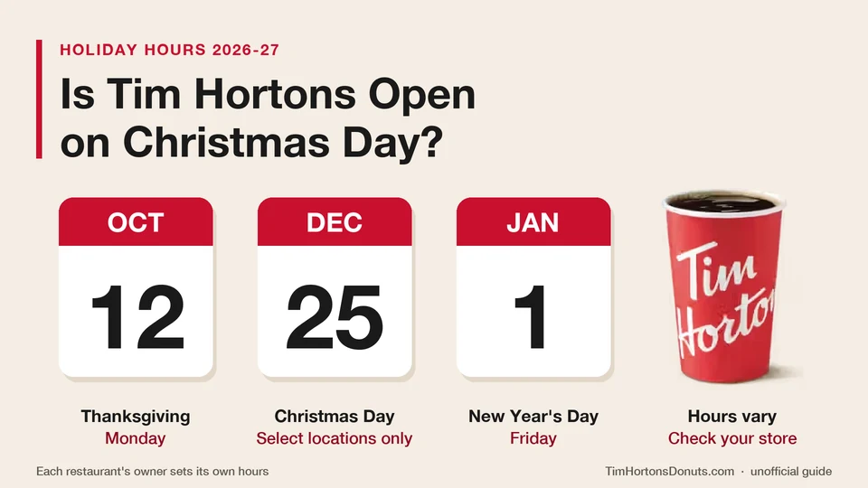

Unofficial fan guide - not affiliated with Tim Hortons
Select locations open on December 25, and each owner sets the hours. Here is the 2026-27 holiday calendar and how to check your own restaurant.
Full Menu / Blog / Tim Hortons Holiday Hours

Some Tim Hortons restaurants are open on Christmas Day, but not all. Each restaurant's owner sets the hours, so there is no chain-wide holiday schedule, and hours at the open ones vary. Check the restaurant locator on TimHortons.ca or in the Tim Hortons app before you go on December 25.
Christmas Day falls on a Friday in 2026. Most stores and many restaurants in Canada close that day, which is why finding an open Tims can take some work. This page gives the honest answer for Christmas and for every other holiday between now and Canada Day 2027. It also shows how to confirm your own restaurant's hours in about a minute.
Yes, at select locations. Tim Hortons does not post one Christmas schedule for the whole chain, because franchise owners choose their own hours. News roundups say the same thing year after year. Daily Hive listed select Tim Hortons locations as open on Christmas Day in Toronto in 2023 and in Edmonton in 2025, with varying hours of operation.
Daily Hive also covered Christmas Day 2017, when Canadians posted about driving between closed restaurants to find an open one. Its report noted that a few Tim Hortons locations stay open on December 25, though not all, and that the open ones had long lineups. Plan for two things: your usual restaurant may be closed, and an open one may be busy.
Highway and 24-hour locations are the best bet. ONroute, which runs highway service centres in Ontario, advertises its centres as open 24/7/365. The 2017 Daily Hive report quoted a traveller waiting in a long line at an ONroute Tim Hortons on Christmas Day.
Restaurants inside another business are the least predictable. A Tim Hortons in a mall, hospital, campus or office tower usually follows the hours of the building around it. If your usual stop is one of these, check it first and have a backup.
Tim Hortons restaurants are run by franchise owners, and the owners decide the hours. Daily Hive reported in 2017 that it is up to each location to decide for itself whether to open on Christmas Day. That is why two restaurants a few blocks apart can post different hours on the same holiday.
It is also why holiday-hours pages disagree. We compared five of them on October 7, 2026. Two said Tim Hortons is closed on Christmas Day, one said closed or reduced hours, one said limited locations are open, and one gave hours of 8:00 AM to 2:00 PM. None named a source. Treat any single chain-wide answer with caution, including a flat "closed".
Tim Hortons does not publish chain-wide hours for Christmas Eve or Boxing Day either. Christmas Eve is Thursday, December 24, 2026, and it is not a public holiday. Boxing Day is Saturday, December 26, and it is a public holiday in Ontario and on the federal list.
The menu trackers that list these days show restaurants open on both, and most warn that some close early on Christmas Eve. None of them cites a source, so use that as a guide only. Confirm your restaurant's closing time before a late-afternoon coffee run on December 24.
Here is every holiday from Thanksgiving 2026 to Canada Day 2027, with the weekday it falls on and what to expect.
| Holiday | Date | Public holiday? | What to expect at Tim Hortons (unofficial) |
|---|---|---|---|
| Thanksgiving | Monday, October 12, 2026 | Yes | Usually open; hours can be shorter |
| Remembrance Day | Wednesday, November 11, 2026 | Federal list; not in Ontario | Usually open; varies by province |
| Christmas Eve | Thursday, December 24, 2026 | No | Usually open; some close early |
| Christmas Day | Friday, December 25, 2026 | Yes | Select locations only; hours vary |
| Boxing Day | Saturday, December 26, 2026 | Yes | Usually open; hours can be shorter |
| New Year's Eve | Thursday, December 31, 2026 | No | Usually open |
| New Year's Day | Friday, January 1, 2027 | Yes | Usually open; hours can be shorter |
| Family Day | Monday, February 15, 2027 | Provincial (Ontario and several others) | Usually open |
| Good Friday | Friday, March 26, 2027 | Yes | Usually open; one tracker says many close |
| Easter Sunday | Sunday, March 28, 2027 | No | Usually open; hours can be shorter |
| Victoria Day | Monday, May 24, 2027 | Yes | Usually open |
| Canada Day | Thursday, July 1, 2027 | Yes | Usually open; hours can be shorter |
The 2026 dates come from the Government of Canada's public holiday list. The 2027 dates are our own calendar calculation. The last column is not a Tim Hortons announcement. It reflects news reports for Christmas Day and the consensus of menu trackers for the other days, so check your own restaurant.
Usually yes, but the hours are still set restaurant by restaurant. We found no announcement of a chain-wide closure for any Canadian public holiday. Christmas Day is the only holiday that every tracker we checked lists as closed or limited.
Most restaurants are expected to open on Thanksgiving, which is Monday, October 12, 2026. It is a public holiday on the federal list and in Ontario, so some owners shorten the day. Check the locator if you are picking up coffee on the way to a family dinner.
New Year's Eve is Thursday, December 31, 2026, and it is a normal business day. New Year's Day is Friday, January 1, 2027, and it is a public holiday. Trackers list regular or reduced hours on January 1, so check before an early start.
Good Friday is March 26, 2027, and it is a public holiday. Easter Sunday is March 28 and it is not. Most trackers list restaurants as open on both days, but one says many Canadian restaurants close on Good Friday, so it is worth a quick check.
Remembrance Day is Wednesday, November 11, 2026. It is on the federal holiday list, but it is not one of Ontario's nine public holidays, and the rules differ in other provinces. Hours on November 11 depend on where you live and on the owner.
Use the official restaurant locator, then call if the day matters. Tim Hortons' Help Centre says the locator on TimHortons.ca gives up-to-date hours of operation, the address and the phone number for each restaurant.
Map apps can show regular hours on a holiday too. The restaurant's own listing or a phone call is the safer source. Our Tim Hortons app guide explains the locator and mobile ordering.
Holiday hours vary because of three things: the owner, the building and the province.
Remembrance Day shows the difference. It is on the federal list, but it is not on Ontario's. A holiday that shortens hours in one province can be an ordinary working day in another.
Some are, but not all. Some high-traffic and highway restaurants run a 24-hour drive-thru, and those are the most likely to keep serving through a holiday. A 24-hour sign is not a guarantee on December 25, so confirm it the same way.
Most of the roughly 3,900 Tim Hortons restaurants in Canada keep set hours instead. A typical restaurant opens around 5 to 6 AM on weekdays and closes between 10 PM and midnight. See our Tim Hortons hours page for regular opening and closing times.
You can order the regular menu plus the seasonal lineup. Breakfast has been served all day at participating restaurants since July 25, 2018. An open restaurant can still make a breakfast sandwich on a holiday afternoon. See the breakfast menu for prices.
The holiday drinks and treats usually arrive in mid-November. Tim Hortons launched them on November 12 in both 2024 and 2025. Our Tim Hortons holiday menu page tracks the 2026 lineup, and the winter menu follows in early January. For a plain coffee on Christmas morning, the coffee menu has every size and price.
Some Ontario locations are open on Christmas Day, but many are not. Christmas Day is one of Ontario's nine public holidays, and each franchise owner decides whether to open. Highway service centres and 24-hour restaurants are the most likely to be serving.
There is no chain-wide closing time on Christmas Eve. Each owner sets it, and menu trackers warn that some restaurants close early on December 24. Check the restaurant locator for your location's hours that day.
Most Tim Hortons restaurants are expected to be open on Boxing Day, which is Saturday, December 26, 2026. It is a public holiday in Ontario, so some owners run shorter hours. Confirm the hours in the app before you go.
Only at restaurants that choose to open. A drive-thru that normally runs 24 hours is more likely to be open, but that is the owner's decision. Call the restaurant if the locator shows only regular hours.
Yes, when the restaurant is open. Tim Hortons has served breakfast all day at participating restaurants in Canada since July 25, 2018. A few items are morning-only, so the full menu may not be available late in the day.
Most restaurants are expected to be open on Canada Day, which is Thursday, July 1, 2027. It is a public holiday across Canada, so some locations may shorten their hours. Restaurants inside closed malls or office buildings are the exception.
Usually yes. Family Day is Monday, February 15, 2027, and it is a provincial holiday in Ontario and several other provinces. Hours can still differ from a normal Monday, so check your restaurant.
Usually yes. Victoria Day is Monday, May 24, 2027, and menu trackers list restaurants as open, mostly on regular hours. The owner still sets the schedule, so the locator is the place to confirm it.
No. Hours are set restaurant by restaurant in both countries, and the holidays themselves differ. Canadian Thanksgiving is October 12, 2026, and American Thanksgiving is November 26, 2026.
Use the restaurant locator in the Tim Hortons app or on TimHortons.ca. It shows the hours, address and phone number for each restaurant near you. On a public holiday, call before you drive over.
Map listings can show a restaurant's regular hours on a holiday. Tim Hortons' Help Centre points customers to its own restaurant locator for up-to-date hours, so trust that first and call if the two disagree.
Usually yes. Menu trackers list regular hours on Labour Day at most restaurants. It is one of Ontario's nine public holidays, so some owners may still adjust the schedule.
This is an independent, unofficial guide. It is not affiliated with, endorsed by, or sponsored by Tim Hortons or Restaurant Brands International. Tim Hortons does not publish a chain-wide holiday schedule, and each restaurant sets its own hours. The holiday notes on this page reflect news reports and third-party menu trackers, not an official announcement, so always confirm with the official Tim Hortons app or your local restaurant. See Sources.